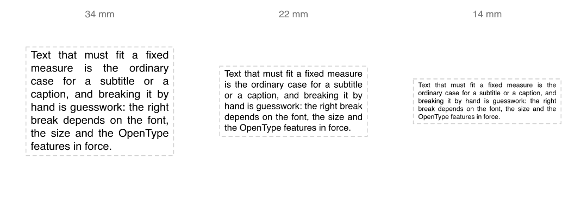
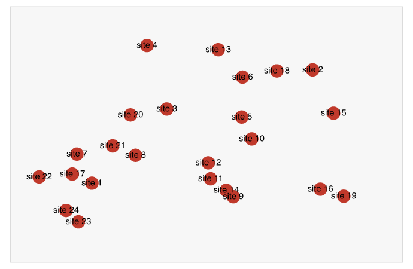
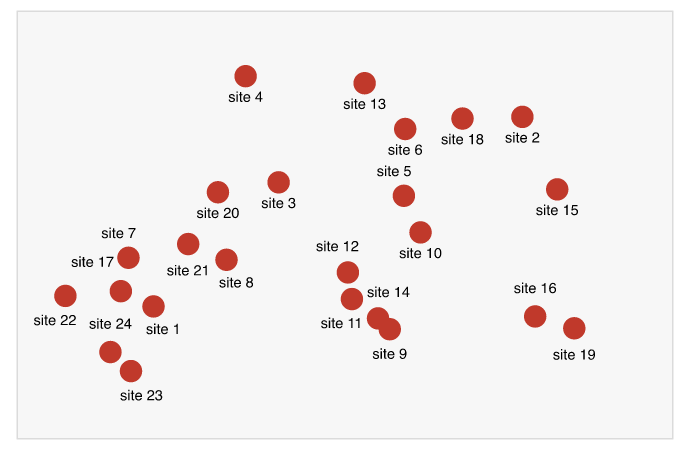
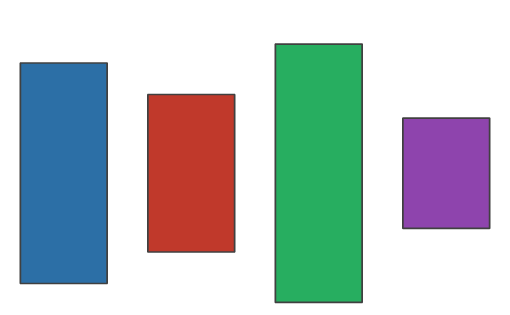
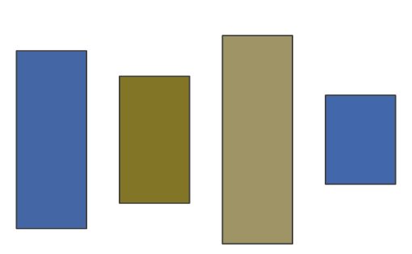
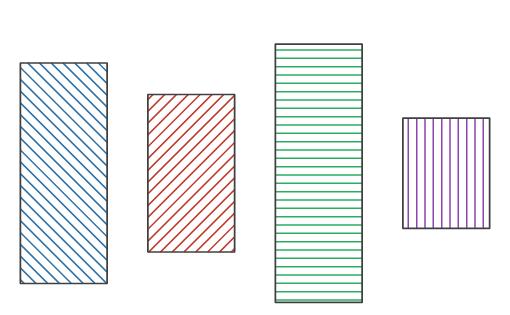
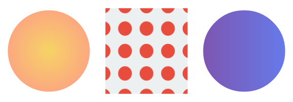
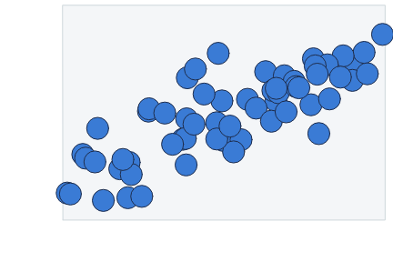
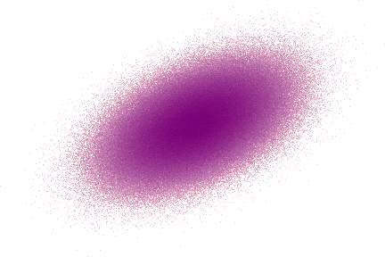

vellum draws nothing until it knows exactly what it is drawing.
Text is measured, layout is solved and every mark’s position is resolved before anything reaches a canvas — in process, with no device open. That one property is where everything below comes from: a scene you can interrogate, wrap text inside, move labels around in, lint, hash, diff and render three ways from a single solve.
It is a low-level graphics framework in the spirit of grid — units, viewports, grobs, layout — and it is the foundation layer a grammar of graphics builds on, not a plotting package itself. That grammar is vellumplot.
Things a graphics engine usually cannot do
Each of these needs the geometry to exist before the draw. In a device-driven stack it does not, which is why these are hard or impossible on top of grid.
Ask the scene where everything landed. One row per element — data key, mark, panel, device-pixel box — with no device open and nothing drawn.
plot <- vl_scene(4, 2, bg = "white") |>
push(vl_viewport(name = "panel", xscale = c(0, 10), yscale = c(0, 10))) |>
draw(points_grob(vl_unit(c(2, 5, 8), "native"), vl_unit(c(3, 7, 4), "native"),
key = paste0("site-", 1:3), name = "sites")) |>
pop()
scene_model(plot)$elements[, c("key", "mark", "panel", "x0", "y0", "x1", "y1")]
#> key mark panel x0 y0 x1 y1
#> 1 site-1 point panel 69.24094 126.84094 84.35906 141.95906
#> 2 site-2 point panel 184.44094 50.04094 199.55906 65.15906
#> 3 site-3 point panel 299.64094 107.64094 314.75906 122.75906Fit text to a box. Wrap to a measure, justify it, and shrink the font until the block fits — each probe re-wraps, because the line breaks depend on the size.
text_grob(caption, width = vl_unit(60, "mm"), height = vl_unit(20, "mm"),
align = "justify", fit = TRUE)Move colliding labels apart, in the engine. Solved in device pixels and applied as an absolute offset, so faceted, polar and warped panels are all solved together, in one pass, with no second compile.
vl_repel(plot) # or vl_place(plot) for the answer aloneLint a figure before anyone sees it. Static analysis for graphics: the label too small to read at this size, the mark that will never be painted, the text that will not contrast with what lands behind it.
vl_scene(4, 2, dpi = 96, bg = "white") |>
draw(text_grob("n = 120", x = 0.1, y = 0.9, gp = vl_gpar(fontsize = 2.5),
name = "n_label")) |>
draw(points_grob(2.4, 0.5, name = "stray_point")) |>
draw(text_grob("watermark", gp = vl_gpar(fontsize = 22, col = "#F2F2F2"),
name = "watermark")) |>
vl_lint()
#> 3 lint findings (3 warnings):
#> ✖ [low_contrast] watermark: contrast 1.4:1 against its backdrop - below 3:1
#> ✖ [offscreen] stray_point: drawn entirely outside the page - check the
#> coordinates or the scale
#> ✖ [tiny_text] n_label: 3.3 px tall - below the 7 px legibility floorTreat a scene as a value. Hash it, diff it, nest one inside another. A structural diff is a far better regression test than an image diff, because it is immune to the font stack:
scene_hash(a) == scene_hash(b)
scene_diff(a, b) # what changed, not which pixelsShip output that is actually accessible. Simulate colour-vision deficiency in the render, encode redundantly with real hatch geometry, and emit a tagged PDF whose structure tree a screen reader can navigate — from the same role/name metadata that drives the SVG.
render(plot, "check.png", cvd = "deuteranopia")
render(plot, "report.pdf") # tagged, if the marks carry role/nameAnd more that has no device-driven equivalent: text set along a curve, boolean path operations on real geometry, contours chained into polylines, SVG icon paths as crisp vector markers, stroke-to-outline expansion, animated SVG, multi-page PDF, and font pinning that makes “identical pixels everywhere” checkable rather than merely claimed.
How a scene is built
Functionally: vl_scene() then a pipeline of push(), draw() and pop() over an immutable tree, rendered with render(), which picks the backend from the file extension.
library(vellum)
vl_scene(width = 5, height = 2.4, bg = "white") |>
draw(rect_grob(width = 0.94, height = 0.82,
gp = vl_gpar(fill = linear_gradient(c("#1b2a4a", "#3a7bd5")), col = NA))) |>
draw(circle_grob(x = 0.16, y = 0.5, r = 0.28,
gp = vl_gpar(fill = "#f7c948", col = NA))) |>
draw(text_grob("vellum", x = 0.62, y = 0.5,
gp = vl_gpar(fontsize = 64, col = "white", fontface = "bold"))) |>
render("hello.png")The rest of the engine
These are the parts that make the above possible, or that you would expect of a graphics engine and would miss if they were absent.
-
Layout is solved once, not once per device. The same solved scene is walked for each backend, so
render(scene, "plot.png" | "plot.svg" | "plot.pdf")agree on geometry rather than each re-solving it against their own font metrics. Output is byte-stable, so figures are snapshot-testable. Where a backend cannot honour something it says so rather than silently dropping it. -
Text that matches the rest of R. Shaping runs through textshaping on systemfonts — the stack ragg and svglite use — with per-glyph fallback, OpenType features (
tnum,smcp,onum), haloed text, and Markdown-style rich labels (md()).vl_strwidth()measures without opening a device. - A modern paint model, everywhere. Linear and radial gradients (on strokes too), tiling patterns, real hatch geometry, alpha and luminance masks, group opacity, blur, drop shadow and glow.
-
Named, editable nodes.
node_names()/get_node()/edit_node()work much asgrid.ls()/getGrob()/editGrob()do — the difference is that the tree is a value you hold rather than device state you recover, so an edit returns a new scene and nothing has to be undrawn. -
Big data without the blob.
datashade()bins millions of points into a density raster in one pass — cost scales with output pixels, not row count — and rasterises line segments with Wu antialiasing rather than binning endpoints. -
Geometry services. Boolean path ops, convex and concave hulls, buffering, contours, path simplification, stroke-to-outline, and true-geometry hit-testing (
vl_nearest()), because a diagonal’s bounding box is a poor description of it. -
Vectorised primitives and a flex layout engine. Batched rects/circles/points/segments/text, nested viewports with rotation and arbitrary-path clipping, and a row/column layout solver with
"null"tracks. -
Grid interop.
as_vellum()/render_grid()render an existing grid grob tree, including ggplot2 and lattice, through the vellum backend.
The engine (tiny-skia for raster, an SVG writer, krilla for PDF) is written in Rust because owning the measuring and rasterising stack is what all of the above requires — not as a performance claim. That is also why installing from source needs cargo.
Installation
vellum compiles a Rust crate, so you need a Rust toolchain (cargo/rustc) in addition to R. Then:
# install.packages("pak")
pak::pak("r-vellum/vellum")Examples
Typography with actual metrics
The same caption wrapped to a fixed measure and auto-fitted to three box heights, and a label set along a curve. None of this is expressible without measuring text up front.

Labels that move themselves out of the way
vl_repel() solves collisions over the resolved geometry — every panel at once, in one pass. Left: as authored. Right: repelled.


Accessible by construction
A palette checked against colour-vision deficiency in the render, and the same categories re-encoded with hatch geometry — crisp at any zoom, correct in print, and readable in greyscale.



As authored · as a deuteranopic reader sees it · re-encoded with hatching.
The paint model
Gradients, a tiling pattern, and a mask, composed with viewports:
tile <- list(rect_grob(gp = vl_gpar(fill = "#ecf0f1", col = NA)),
circle_grob(r = 0.32, gp = vl_gpar(fill = "#e74c3c", col = NA)))
vl_scene(6, 2.1, bg = "white") |>
# radial gradient
push(vl_viewport(x = 1/6, width = 1/3)) |>
draw(circle_grob(r = 0.42, gp = vl_gpar(fill = radial_gradient(c("#f6d365", "#fda085")), col = NA))) |>
pop() |>
# tiling pattern
push(vl_viewport(x = 3/6, width = 1/3)) |>
draw(rect_grob(width = 0.84, height = 0.84,
gp = vl_gpar(fill = vl_pattern(tile, width = 0.22, height = 0.22), col = NA))) |>
pop() |>
# a linear gradient, clipped to a circular mask
push(vl_viewport(x = 5/6, width = 1/3,
mask = as_mask(circle_grob(r = 0.42, gp = vl_gpar(fill = "white", col = NA))))) |>
draw(rect_grob(gp = vl_gpar(fill = linear_gradient(c("#7f53ac", "#647dee")), col = NA))) |>
pop() |>
render("man/figures/README-paint.png")
A data scene with native coordinates
vellum is the layer a grammar builds on, so plots are assembled from primitives in a viewport with its own xscale / yscale ("native" units):
set.seed(1)
x <- runif(60, 0, 10)
y <- 1.8 * x + rnorm(60, 0, 4)
vl_scene(4.5, 3, bg = "white") |>
push(vl_viewport(x = 0.57, y = 0.57, width = 0.82, height = 0.82,
xscale = c(0, 10), yscale = range(pretty(y)))) |>
draw(rect_grob(gp = vl_gpar(fill = "#f4f6f8", col = "#cfd8dc"))) |>
draw(points_grob(vl_unit(x, "native"), vl_unit(y, "native"), size = vl_unit(3.2, "mm"),
gp = vl_gpar(fill = "#3a7bd5", col = "#1b2a4a", lwd = 1))) |>
pop() |>
render("man/figures/README-scatter.png")
A million points with datashade()
datashade() aggregates the points into a grid the size of the output raster, counts how many land in each cell, and colours each cell by that count. Because the work scales with the number of pixels rather than the number of points, it draws millions of points quickly, shows true density instead of the solid blob that overplotting produces, and keeps the output file small.
set.seed(2)
n <- 1e6
xx <- rnorm(n)
yy <- xx * 0.55 + rnorm(n)
vl_scene(4.5, 3, bg = "white") |>
draw(datashade(xx, yy, width = 450, height = 300, colors = c("#fde0dd", "#7a0177"))) |>
render("man/figures/README-datashade.png")
Relationship to grid and ggplot2
vellum sits at grid’s level of the stack: units, viewports, grobs, layout, and rendering. What it adds is device-independent measurement (so layout is solved once, not once per output format), geometry read-back (scene_model(), hit_test()), a modern paint model, and built-in aggregation for large data. It is not a grammar of graphics (no scales, stats, geoms, or facets) — that is vellumplot, which compiles a plot spec into a vellum scene. To render existing grid / ggplot2 / lattice output through the vellum backend, use as_vellum() / render_grid().
The vellum ecosystem
Four packages sharing one scene model. The seam between them is the scene itself: a value each layer can pass on, query, or annotate.
- vellum — the parchment. The low-level graphics engine (this package).
- vellumplot — the pen. A pipe-first grammar of graphics that compiles a plot spec into a vellum scene.
-
vellumwidget — the annotation. Interactive HTML widgets, built entirely client-side on
scene_model()’s geometry — hover, brush, lasso, linked zoom, and crosstalk, with no server round trip. - vellumverse — installs and loads the whole ecosystem in one step.
vellumwidget is a good illustration of what the read-back buys: it adds no drawing code at all. It renders the scene’s SVG, reads the element table, and attaches behaviour.
Development
vellum wires an R package to a Rust crate via extendr (crates are vendored for offline/CRAN builds).
rextendr::document() # compile the Rust backend + regenerate R wrappers
devtools::test() # run the test suite